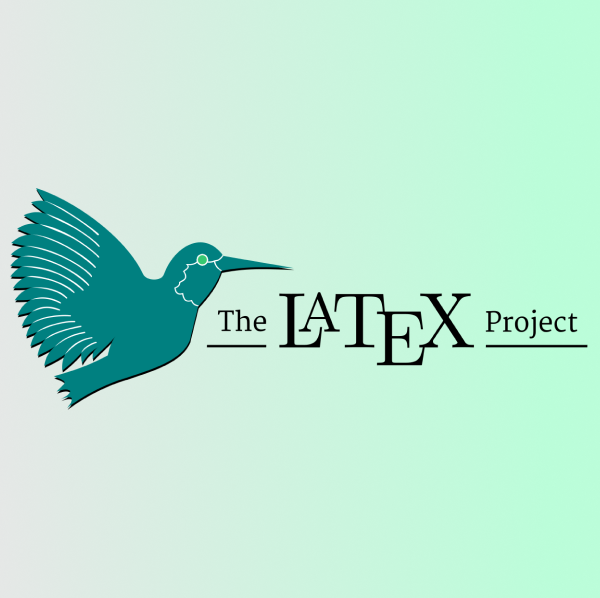

The COVID-19 pandemic hit us all in the most unexpected and unforeseen ways. The threat of a deadly virus spreading rapidly around the globe turned our world upside down.....
Importance of the Internet in Sustainable Development
Varsini S.R.
8th January 2021
The Internet has become an undeniable part of our lives. It plays a crucial role in various fields such as economics, education, and connecting with our peers......
All about words!
Sabrina Manickam
14th August 2021
From your residence to your workplace, from simple tasks such as ordering a
meal to crucial laws and
treaties that keep our world in order, we are reliant on words.....
Anti-microbial Resistance
Varsini S.R
24th July 2021
An antimicrobial is an agent that kills microorganisms or stops their
growth. Antimicrobial medicines can be grouped according to the.....
Reasons an octopus can fascinate you
Sabrina Manickam
17th July 2021
I’m sure most of you have looked up at the sky and wondered about the
mysteries hidden in the vast universe, but have you ever looked at the ocean and thought the same?
The Science of Positive Psychology
Satvika Mahapatra
10th July 2021
You’ve probably heard the term “positive psychology” being thrown around a
lot. But what does it mean actually? There are a lot of…
Nanotechnology: A Small Solution to Big Problems.
Akshata Bhat
26th June 2021
Have you ever wondered how Tony Stark was able to build an armor instantly
by simply pressing the power source on his chest? The answer is…
A different perspective on the M87: A Supermassive Blackhole
Tarosh Kuchroo
12th June 2021
On 10th April 2019, the Event Horizon Telescope group released the
first-ever image of a black hole. 2 years later, on 24th March 2021, we…
CRISPR : A Gene Editing Tool
Sudeepta Prasad
8th August 2021
When we see the term immortality, the first thing that hits our minds is the
thousand-year-old vampires, from twilight being all youthful with their baby-like skin making us
wonder....
Unity Game Engine: Why is it the better option for Beginners?
Anushka Srivatsava
30th July 2021
Hundreds and thousands of video games exist in today’s world which cater to
everyone’s palette, but what distinguishes......
Telescopes: The starting dot of Astronomical discoveries
Master Muskan
19th June 2021
Ever wondered what was the starting point to all these discoveries? Let’s
find them out here.
The Search Continues…
Pratyksh Gupta
27th April 2021
Do we really understand the universe or are we all just daydreaming?
Can we escape from a Black Hole?
Ananya Pantvaidya
8th April 2021
Black holes might not be so black after all…
What’s the matter with Dark Matter?
Tarosh Kuchroo
1st April 2021
For almost a decade now, we’ve been on a search for something that we can’t
see. Today we’ll glance at what dark matter exactly is and why…
Exploratory Data Visualization using Python
Shakthi Thanigaivel
1st April 2021
Data visualization is one of the most important skills-set that any aspiring
Data science enthusiast should possess. Visualizing data…
The Last Frontier
Anurag Mukherjee
23rd March 2021
A surreal odyssey to the truth… or maybe…the limit of what we hope to be…
How Instagram’s UX Design make us addictive?
Shakthi Thanigaivel
14th March 2021
Social media has become a very essential part of our lives. If not all, most
smartphone users get up they dive into their phones, and surf…
Metamaterials: An Overview
Anurag Mukherjee
13th March 2021
The prefix ‘meta’ attached to a material indicates that material in question
has characteristics which can not be clearly defined on the…
The Apple M1
Anurag Mukherjee
29th January 2021
Traditionally Apple PCs have always run microprocessors sourced from Intel,
even though there smartphone lineup use their own home-grown chips. .....
A Guide to UX Research
Shakthi Thanigaivel
5th December 2020
User Experience(UX) research or also known as design research is very
influential throughout the process of designing a prototype. In the…
Classification Algorithms: How to approach real world Data Sets
Anurag Mukherjee
29th November 2020
This blog will take you through a real world scenario to explain the
questions of ‘when’ ,‘how’ and ‘which’ of machine learning classification algorithms.
6 things you should know before entering App Development
Deepak Mukka
26th November 2020
This article is brief introduction about things to know before entering into
application development. App development or Application…
Message Transfer using Associated Matrices
Yazhini Krishnan
20th November 2020
Communication is the most important of all life skills. It enables us to
pass information to other people and to understand what is said to us...
GCP’s Data Center Security
Shakthi Thanigaivel
16th November 2020
In the year 2020, there are around 6.9 billion google searches on Google
every day, and mind-blowing 2.5 trillion searches every year…

LaTeX: overhyped or still a gem
Anurag Mukherjee
13th October 2020
“LaTeX vs. Word” but with a twist. Word is a generic editor. It was meant to
be a user friendly, made-for-the-masses software which even…